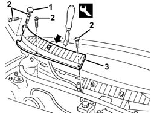
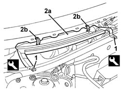
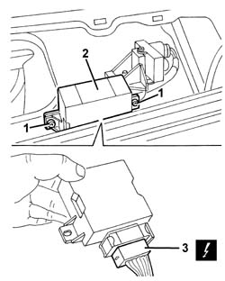

5050B54 front windscreen wiper electronic device - r r
- Path
- Procedures > 50 AUXILIARY UNITS > 5050 SCREEN WASHERS AND HEADLAMP WASH/WIPE > 5050B windscreen wash/wipe > 5050B54 front windscreen wiper electronic device - r r
- Kind
- repair procedure (removal / refitting; the operation number is the code)
- Applies to
- all engines; all production periods
- Interactive page
- https://sloeber94.github.io/elrnDB-a156/en/#/3238370
Applies to: all engines; production: da 03/02 a 09/03, da 10/03
 Removing
Removing
 Refitting
Refitting5050B34 windscreen wiper arm/s complete with blade - r+r (right side).
1. Release the protection.
2. Undo the bolts fixing the right trim.
3. Move the trim after having released the inner retainers using the special tool.
 | Name | Country |
|---|---|---|
3 | Scraper blade | 1.823.014.000 |

Applies to: all engines; production: da 03/02 a 09/03, da 10/03
1. Release the retainers using the special tool.
| Name | Country |
|---|---|---|
3 | Scraper blade | 1.823.015.000 |
2. Remove the protection (2a), releasing the retainers (2b).

Applies to: all engines; production: da 03/02 a 09/03, da 10/03
1. Unscrew the bolts
2. Move the windscreen wiper control unit.
3. Disconnect the electrical connections.
 | Name | Connector |
|---|---|---|
3 | Windscreen wiper control unit |

Applies to: all engines; production: da 03/02 a 09/03, da 10/03
Refitting
RemovingCheck that the control unit is intact and shows no signs of damage.
Connect the electrical connection and place the control unit in position.
Tighten the screws.
Fit the protection in place engaging the retainers.
Fit the windscreen base trim and engage the inner retainers.
Tighten the screws.
Fit the protection.
5050B34 windscreen wiper arm/s complete with blade - r+r (right side)